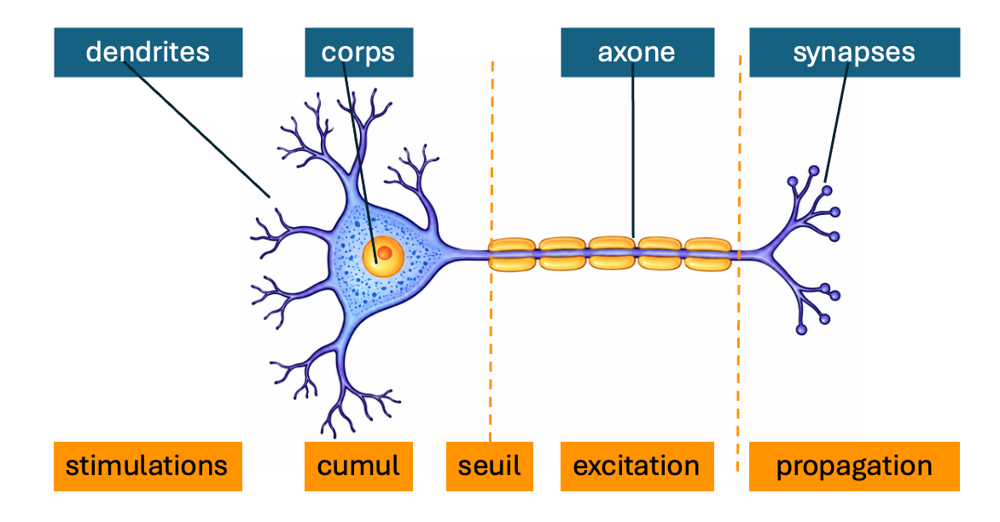
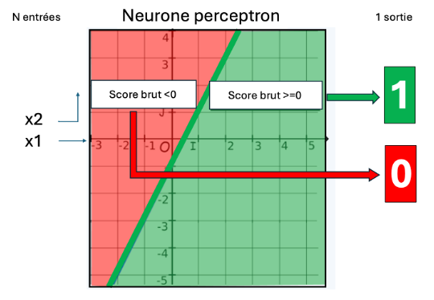
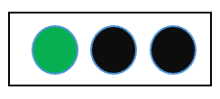
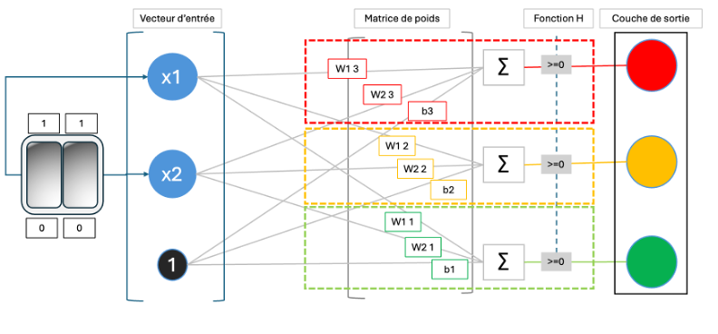
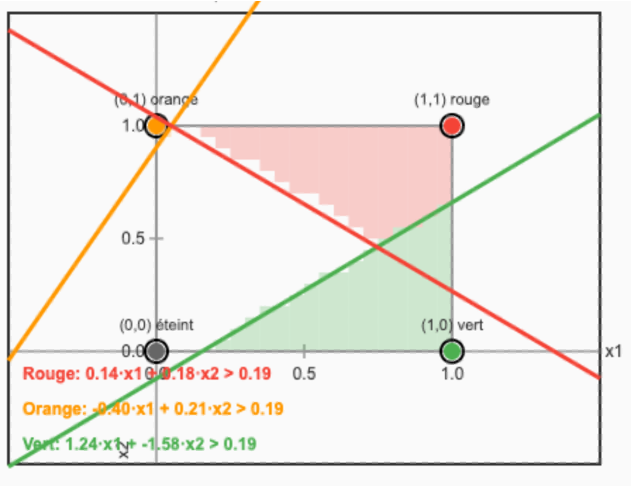

Le neurone artificiel : une fonction, pas un organe
Pourquoi "neurone"
Dans un neurone biologique, si le cumul des stimulations
reçues dépasse un certain niveau, il excite son axone.
Ce comportement à effet de seuil est apparu comme simple
à simuler.
On a cru que l'intelligence émergerait du nombre de connexions.

Représentation d'un neurone biologique
Le neurone artificiel est un calcul
Un neurone artificiel cherche à reproduire cette logique par des opérations simples.
Il associe à chaque entrée un poids lui fixant son importance
dans la décision commune.
Par des multiplications et une sommation, il va produire un
score brut.
Ce score est traduit en
prédiction par une
fonction d'activation
Le perceptron est comme le neurone d'origine: Il s'active sur un dépassement de seuil (ou échelon).

Schéma d'un neurone artificiel à deux entrées
Le score brut est un calcul : somme(xi.wi) + biais.
( ci-dessus : w1·x1 + w2·x2 + b).
Avec seulement deux entrées, c'est l'équation d'une droite dans un plan, décalée de l'origine par le biais b.
Cette frontière sépare les scores positifs des scores négatifs.Les scores nuls sont sur la frontière elle-même.
Représentation géométrique des scores bruts d'un neurone artificiel

Les poids w1,w2 conditionnent la pente de la droite, et le biais son décalage de l'origine.
Le score brut est la distance, positive ou négative, d'un point à la frontière de
décision.
Tout neurone artificiel découpe son espace de nombres en deux parties.
- Avec deux entrées il sépare le plan (x1,x2) en deux parties par une droite.
- Avec trois entrées, il séparera l'espace habituel en deux parties par un plan.
- Avec n entrées, il séparera un hyperespace en deux parties par un hyperplan.
La fonction d'activation crée la prédiction
La fonction d'activation transforme le
score en une prédiction.
Celle du perceptron historique est la fonction échelon H
(Heaviside step function du nom de son inventeur):
- La prédiction est 1 (vrai) si le score brut est supérieur ou égal à 0
- La prédiction est 0 (faux) s'il est inférieur

Le perceptron historique est un classifieur binaire.
Classifieur binaire
La fonction d'activation à échelon crée des classifieurs binaires, tout ou rien, vrai ou faux.
De nombreux usages sont binaires en fin de traitement :
- Filtrage de spam (un message est-il spam ou non)
- Détection de fraude bancaire (transaction frauduleuse ou légitime)
- Diagnostic médical (présence ou absence d'un marqueur de maladie)
- Analyse de sentiment (avis positif ou négatif)
- etc.
Classification multiple
Si on a N catégories différentes à isoler, on entraîne N classifieurs différents, un par classe.
Si les catégories sont exclusives (One-vs-all) il faut veiller à ce qu'une seule
sortie soit positive à la fois.
🟡 Illustration libre: un feu tricolore, deux interrupteurs
Le perceptron est le premier et le plus simple des neurones artificiels, mais il est suffisant pour en illustrer le fonctionnement.
On imagine n'avoir que deux interrupteurs pour allumer distinctement chacun des trois feux.Du code simplissime pourrait le faire. L'ambition est d'utiliser des perceptrons pour en comprendre le fonctionnement.
Encodage des deux entrées et des trois sorties:
-
On prend arbitrairement comme convention qu'un interrupteur fermé a la valeur 1 et un
interrupteur ouvert la valeur 0.
- On considère qu'une prise est alimentée si sa valeur est 1 et hors tension si elle vaut 0.
Le jeu de données et de test
Il définit le comportement attendu du réseau de neurones.
C'est ce qu'on appelle l'apprentissage supervisé :
on fournit au modèle des exemples étiquetés (entrée + sortie attendue),
et il apprend à reproduire ce comportement.
Ci-dessous, chaque ligne du tableau est un exemple supervisé :
(entrées) → (sortie souhaitée).
| Interrupteurs | sortie visuelle | sortie numérique |
|---|---|---|
| 0 0 ouvert ouvert |

|
0 0 0 |
| 0 1ouvert fermé |
 |
1 0 0 |
| 1 0 fermé ouvert |

|
0 1 0 |
| 1 1 fermé fermé |

|
0 0 1 |
Il n'y a que 4 cas possibles à l'entrée: On peut tenter d'entraîner ce réseau simplissime manuellement.
Un neurone par feu
Un neurone n'ayant qu'une sortie. Il faut un réseau de 3 neurones distincts.

Représentation du réseau avec détail des 3 neurones perceptrons en parallèle
L'entrée à "1" du biais
Pour que tous les neurones utilisent la même règle simple — activer si le score est positif —, on intègre le biais directement dans le calcul de la somme. Aussi, on ajoute une entrée fixe à 1, multipliée par le biais.La taille du modèle
Le modèle est le tableau numérique des paramètres une fois le
réseau entraîné. Sa taille est son nombre de paramètres.
Notre modèle à 9 paramètres :
1 couche de sortie faite de 3 neurones avec 3
paramètres chacun.
Les réseaux pour la reconnaissance d'images ont des millions (106)
de paramètres et des dizaines de couches.
Les grands LLM (Large Language Model) qui répondent aux questions en ont des
milliers de milliards (1012) et des centaines de couches.
Le fonctionnement de base fait de calculs reste le même, que ce soit pour 10, 106 ou
1012 paramètres,
mais la puissance de calcul à mobiliser est exponentielle.
Expérimenter ce réseau
Les poids sont initialisés au hasard au début de chaque entraînement.
Le but est de les ajuster pour isoler chaque feu indépendamment.
On pourra entrainer soi-même ce modèle en modifiant ses poids ou voir un apprentissage automatique en action.

La visualisation montrent les droites des trois neurones selon leurs paramètres courants.
Les points colorés indiquent quel feu DOIT s'allumer selon la combinaison des interrupteurs.
Le point doit être du côté où le score brut est positif, ce qui se voit par une plage colorée.
Aller directement au chapitre 2
comment composer des transformations simples